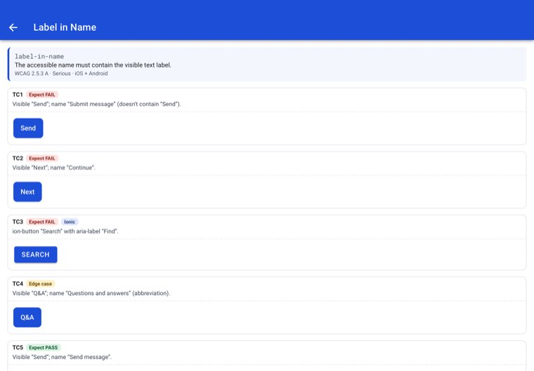
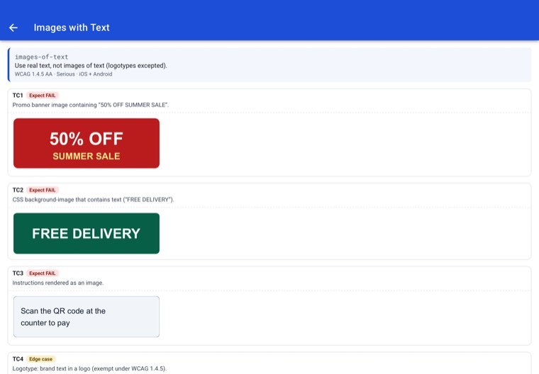
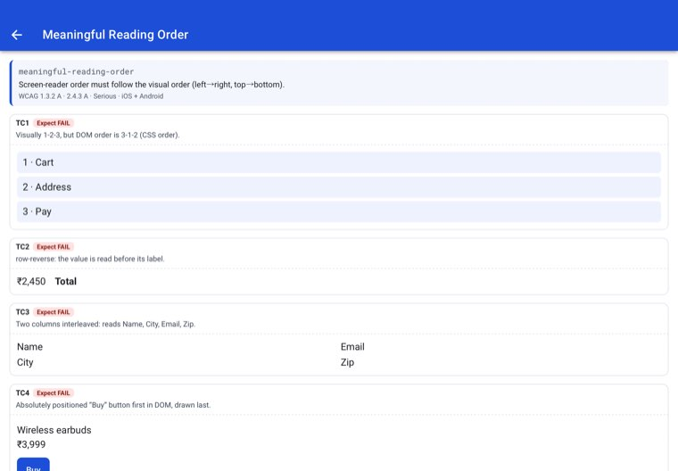

← WebView & Angular support analysis · Rule support summary
The same Angular 22 + Ionic 9 Rule Lab (41 rule pages, 208 test cases, 127 expected FAIL) was packaged in two native shells: “A11y Angular POC Cordova” (cordova-ios 8.1.1) and the existing Capacitor 8 app. Both were patched with the DOM-layer injector and scanned page by page on the same iPad Air 11" (M2, iPadOS 26.5). The only differences are the shell and how the scan driver navigates between pages. The Angular source is unchanged.
| Capacitor 8 (existing) | Cordova (cordova-ios 8.1.1) | Effect on the DOM layer | |
|---|---|---|---|
| Web view | Capacitor CAPBridgeViewController → WKWebView | CDVViewController / CDVWebViewEngine → WKWebView | None: the dylib finds any WKWebView, and the creation hook (initWithFrame:configuration:) fires in both |
| Origin | capacitor://localhost | app://localhost (scheme / hostname preferences) | None: the extractor runs in the isolated content world on any origin |
Deep links to /rule/<id> | Unknown paths fall back to index.html | The scheme handler serves files only; navigation stays inside the page (router) | Scan driver only: NAV=push (pushState + popstate) instead of reloading |
| Config | capacitor.config.ts (webContentsDebuggingEnabled) | config.xml (InspectableWebview, Orientation=all, deployment-target 14.0) | None |
| Web bundle | npx cap sync copies dist/ | scripts/build-cordova.sh copies the same dist/ into www/ and adds cordova.js | None: identical DOM, so identical nodes |
| Native plugins | @capacitor/screen-orientation | cordova-plugin-screen-orientation (the Capacitor plugin's web fallback calls it) | None: orientation rules read Info.plist |
| Native views around the web view | Cordova adds a few container views (UIView, a launch UIImageView, layout guides): about 10 more native nodes per scan. | Only extra passing results on those containers; no new FAIL | |
| Minimum iOS · IPA size | 14.0 · 1.7 MB unsigned | 14.0 · 1.4 MB unsigned | The DOM layer needs iOS 14+ |
| Rule | Capacitor | Cordova | Per test case |
|---|---|---|---|
| Accessibility Label at frontlabel-at-front | 2/2 | 2/2 | identical |
| Accessible Input Field Labelsaccessible-input-field-label | 2/3 +1 AI | 2/3 +1 AI | identical |
| Accessible Interactive Elementsinteractive-element-accessibility | 1/3 | 1/3 | identical |
| App Orientation Lockapp-orientation-support | — | — | identical |
| Button Element Accessibility Label Capitalizationbutton-element-content-label-capitalization | 3/3 | 3/3 | identical |
| Checkbox Element Content Labelcheckbox-element-content-label | 0/4 | 0/4 | identical |
| Duplicate Accessibility Label on Screenduplicate-element-content-label | 2/2 | 2/2 | identical |
| Duplicate State Info in Spoken Outputstate-in-content-label | 0/4 | 0/4 | identical |
| Duplicate Type Info in Spoken Outputview-type-in-content-label | 3/5 | 3/5 | identical |
| Editable Element Accessibility Labeleditable-element-content-label | 2/4 +2 AI | 2/4 +2 AI | identical |
| Editable Element Label Not Announcededitable-element-no-content-description | 0/2 | 0/2 | identical |
| Font Magnification Supporttext-magnification | 0/3 | 0/3 | identical |
| Images with Textimages-of-text | 0/3 +3 AI | 0/3 +3 AI | identical |
| Incorrect Headingincorrect-heading | 0/4 +4 AI | 0/4 +4 AI | identical |
| Input type for Input Fieldsinput-type-for-input-field | 0/4 +4 AI | 0/4 +4 AI | identical |
| Interactive Element Accessibility Labelinteractable-element-content-label | 3/4 | 3/4 | identical |
| Interactive Elements with Unsupported Typeinteractive-element-unsupported-type | 3/3 | 3/3 | identical |
| Keyboard Focus for Interactive Elementskeyboard-focus-for-interactive-elements | 4/4 | 4/4 | identical |
| Label in Namelabel-in-name | 3/3 | 3/3 | identical |
| Link Text Purposelink-text-purpose | 3/4 +1 AI | 3/4 +1 AI | identical |
| Meaningful accessibility label for imagesimageview-element-content-label | 2/4 +2 AI | 2/4 +2 AI | identical |
| Meaningful Reading Ordermeaningful-reading-order | 0/4 | 0/4 | identical |
| Meaningful Visual Ordermeaningful-visual-order | 0/3 +1 AI | 0/3 +1 AI | identical |
| Missing Headingmissing-heading | 0/3 +3 AI | 0/3 +3 AI | identical |
| Missing View Type in Spoken Outputmissing-view-type-in-spoken-output | 2/3 | 2/3 | identical |
| Non-Text Element Color Contrastnon-text-color-contrast | 2/4 | 2/4 | identical |
| Overlapping Interactive Elementsoverlapping-interactive-elements | 1/3 | 1/3 | identical |
| Readable Text Sizereadable-text-size | 0/2 | 0/2 | identical |
| Readable Text Spacingreadable-text-spacing | 0/3 | 0/3 | identical |
| Responsive Containersresponsive-containers | 2/2 | 2/2 | identical |
| Screen Reader Focus for Interactive Elementsfocus-order-for-interactive-elements | 0/3 | 0/3 | identical |
| Special-Character Element Accessibility Labelspecial-character-element-content-label | 3/4 | 3/4 | identical |
| Spoken Description not Meaningfulscreen-reader-for-interactive-elements | 0/3 | 0/3 | identical |
| Supported Screen Orientationsscreen-orientation | 0/1 | 0/1 | identical |
| Switch Element Accessibility Labelswitch-element-content-label | 0/3 +3 AI | 0/3 +3 AI | identical |
| Text Element Color Contrast (Minimum)text-color-contrast | 4/4 | 4/4 | identical |
| Text Truncationtext-truncation | 3/4 | 3/4 | identical |
| Touch Target Sizetouch-target-size | 4/4 | 4/4 | identical |
| Touch Target Size & Spacingtouch-target-size-and-spacing | 2/2 | 2/2 | identical |
| Traversal Order Cycletraversal-order-cycle | 0/2 | 0/2 | identical |
| Two-Dimensional Scrollingtwo-dimensional-scroll | 2/2 | 2/2 | identical |
“+n AI” = sent to AI review (the verdict comes from the server's AI step, not run locally). Each test case's verdict (fail / AI review / pass / none) was compared, including PASS and edge cases.
Cordova was scanned with the injector built from webview-dom-poc db6e966. The Capacitor figures are the earlier read-only DOM-layer scans plus the same label-at-front fix, derived from those scans. Both builds use the same DOM-layer code.





WKWebView, so the DOM layer extracts the same 2,200 web nodes and every rule reaches the same verdict on all 208 test cases.cordova framework value is only a label.UIWebView (cordova-ios before 6, rejected by the App Store since 2020), iOS below 14, and content inside iframes from another site.